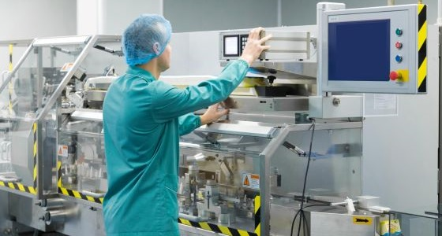

WORK HISTORY: 05/2019 – Current Technical Operator - Coopervision – Hamble, Hampshire Started working as operator in Avaira and after 2 months, was confident in all the modules. Was then moved to MyDay and 7 months after was in the pool for Techop. After Covid, a Techop position became available, where I work for 2 years, in Biofinity. 05/2016 – 12/2018 Operator/Welder - Gestamp – Fareham, Hampshire Started as operator loading cells, building automotive parts. After 6 months, got welding training and after a month was already reworking parts and helping quality department in many different tasks. Had opportunity to be a part of some projects that I am proud of such as a survey movie (shared across the globe in Gestamp sites), Honda Quality Circle and GDLP. Occasionally, I also replaced my shift leader while he was on holidays. 08/2015 – 05/2016 Warehouse Assistant - Parfois (Barata&Ramilo SA) – Porto, Portugal Warehouse assistant based within the logistics team focused on picking and packing. Redistribution of products on behalf of Parfois stores. 11/2014 – 05/2015 Warehouse Assistant – Barboflex – Porto, Portugal Warehouse assistant, leasing with costumers & assisting with assembling items when required. 07/2011 – 11/2014 Fireproof Seals Technician – Porseg – V. N. Gaia, Portugal Fireproof seals technician, overlooking product installation and servicing. I was responsible for coordinating transportation and rotas for engineers, while managing deadlines.
